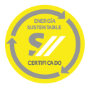

- QUIENES SOMOS
- PRODUCTOS
- INSTALACIONES
- DOCUMENTACION
- CONTACTO
INSTALACIONES
¿Por qué certificar?
La generación de electricidad es una de las actividades humanas que más contribuye al cambio climático. Esto se debe a que la mayor parte de nuestra electricidad proviene de combustibles fósiles, como el petróleo, el carbón y el gas natural, todo ellos generadores de gases de efecto invernadero y contaminantes atmosféricos. Sin embargo, es posible generar electricidad a partir de fuentes de energía renovables como el sol, el viento y la biomasa.
Un sello de producción basada en energías renovables posiciona distintivamente a aquellas compañías proveedoras de bienes y servicios, en un contexto donde los mercados y los medios de producción deben perseguir cada vez más intensamente la mejora continua y la minimización de los impactos ambientales. Al mismo tiempo, un sello proporciona información relevante que permite a los consumidores realizar una toma de decisión consciente y considerada con el cuidado del planeta, al momento de optar por un determinado bien o servicio. A su vez, esta misma elección del consumidor, contribuye a la generación de consciencia por parte de otros actores del mercado, desafiándolos e impulsándolos en la búsqueda de un nuevo paradigma productivo, más compatible con el medio ambiente y sustentable.
El objetivo del sellado en energías renovables contribuye al desarrollo de nuevos mercados y consumidores, al uso y despliegue de las energías alternativas, a la disminución de las emisiones de gases de efecto invernadero, y al cuidado del planeta.
DEFINICIONES
Criterios
Para calificar para el uso del Sello Energético Sustentator, la empresa u organización deberá tener como mínimo un 25% de su consumo energético satisfecho mediante energías renovables como eólica, solar térmica, solar fotovoltaica, geotérmica, hidráulica, biomasa o una combinación de éstas. Este consumo corresponde con la energía eléctrica y térmica empleada por la Organización tanto directa como indirectamente en la producción de bienes y servicios. La energía renovable puede ser adquirida a través: de instalaciones propias de generación de energía; contratos de compra de energía a centrales eléctricas basadas en energías renovables; certificados de reducción de emisiones (CERs) adquiridos a través de organismos reconocidos.
La certificación de Sello Energético Sustentator idealmente debe ocurrir luego de un período de doce meses de control y seguimiento del consumo energético o como mínimo tres meses en caso de que la empresa candidata pueda acreditar documentación histórica de demandas y fuentes de energía. En ambos casos, se calculará el porcentaje de presencia de energías renovables. En el segundo caso, el candidato al Sello Energético Sustentator deberá tomar compromiso de mantener este porcentaje hasta los doce meses posteriores, momento en el cual se reiterará la evaluación energética.
El Sello podrá acreditar productos y servicios, eventos, y organizaciones que utilicen energías renovables para llevar adelante sus operaciones y busquen proporcionar información abierta y transparente para cuantificar este consumo energético.
